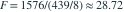
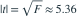

n=10 的含截距简单回归得到斜率 −0.42，总平方和 2015、回归平方和 1576。以下哪项正确？
- A样本相关系数约为 +0.884
- B回归 F 统计量约为 32.3
- C误差方差的无偏估计为 439
- D斜率显著性 t 统计量的绝对值约为 5.36
我已思考，展开答案与解析
正确答案：D
- SSE=439，误差均方为 ，

，
。相关系数与斜率同号，约为 −0.884。
易错提醒先明确分布参数、独立性和统计量的定义，再进行计算。
用户提供练手卷 · 原第 33 题；题目 PDF 第 6 页
单选改编；题干与选项已重新编排